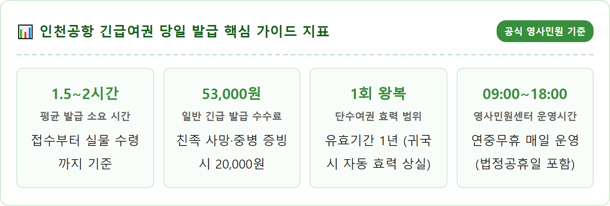
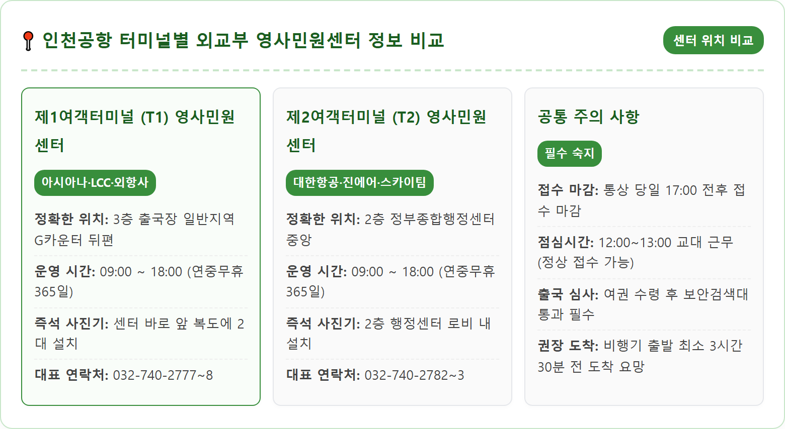
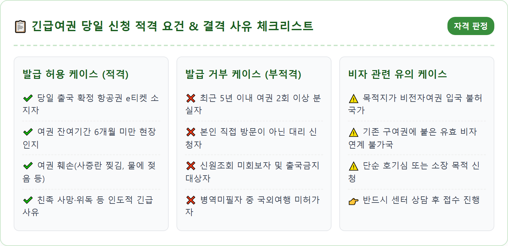
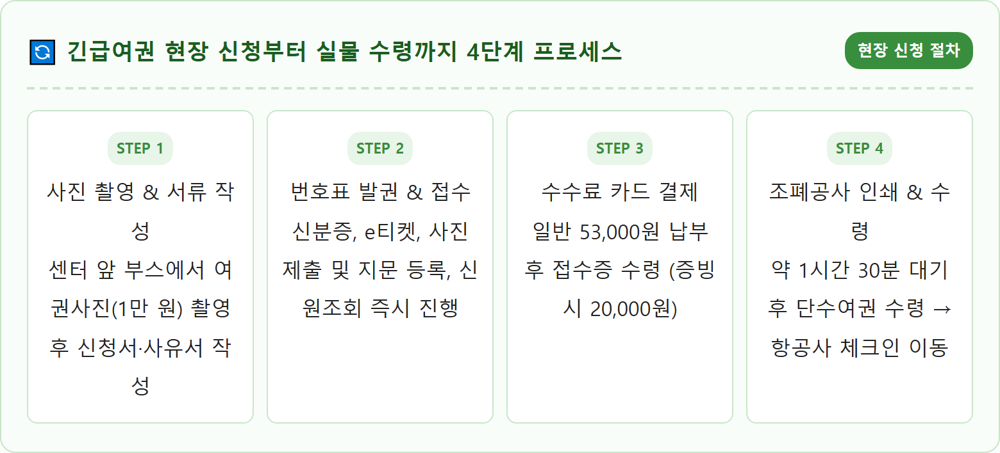
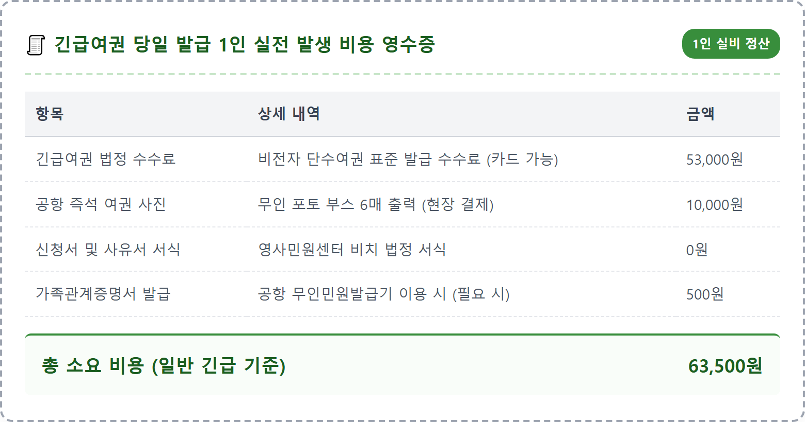
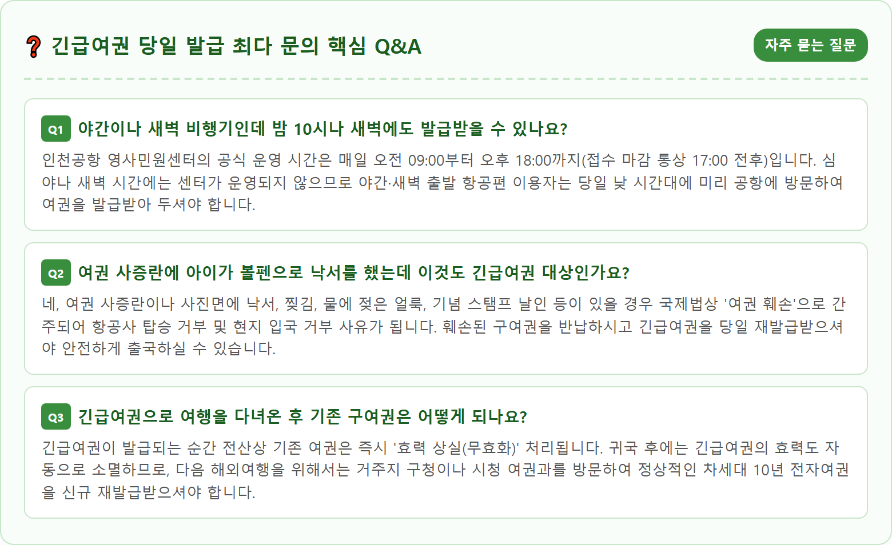

A professional, highly detailed documentary-style photograph taken inside Incheon International Airport in South Korea. In the foreground, an official emergency passport application form, an airline boarding pass, and a South Korean emergency passport (single-journey non-electronic passport) rest neatly on a clean airport counter. In the background, the modern, luminous glass architecture of the airport terminal terminal hallway with travelers walking purposefully with luggage and flight information display boards glowing softly in the distance. Sharp focus, authentic airport atmosphere, hyper-realistic, 8k resolution, 1:1 aspect ratio.
오랫동안 고대해 온 해외여행 당일, 설레는 마음으로 공항 체크인 카운터에 도착했는데 "여권 유효기간이 6개월 미만이라 탑승권 발권이 불가능합니다"라는 청천벽력 같은 말을 듣거나, 가방 속 깊숙이 넣어둔 여권을 아무리 찾아도 보이지 않을 때 여행자가 느끼는 당혹감은 이루 말할 수 없습니다. 대부분의 국가가 입국 요건으로 '여권 잔여 유효기간 6개월 이상'을 엄격하게 규정하고 있기 때문에 사소한 확인 소홀이 여행 전체를 망치는 위기로 이어지곤 합니다.
이처럼 출국이 임박한 시점에 여권 분실, 도난, 훼손, 유효기간 만료 등의 사유로 통상적인 전자여권 발급(통상 4~7일 소요)을 기다릴 여유가 없는 긴급한 국민을 구제하기 위해 외교부에서 운영하는 특별 행정 제도가 바로 '긴급여권(비전자 단수여권)' 발급 서비스입니다.
긴급여권은 표지가 남색 전자여권과 달리 짙은 청회색을 띠고 있으며, 전자 칩이 내장되지 않은 스티커 형태의 사진 부착식 단수여권입니다. 유효기간은 발급일로부터 통상 '1년'으로 지정되지만, 발행국(대한민국)에서 출국하여 지정된 목적지를 거쳐 다시 귀국하는 '1회 왕복(Single Entry)'에 한하여 효력을 발휘합니다. 출국 당일 공항 현장에서 1~2시간 만에 신속하게 발급받아 위기를 넘길 수 있는 최후의 보루입니다.

긴급여권을 발급받기 위해 가장 먼저 해야 할 일은 자신의 탑승 터미널(T1 또는 T2)에 위치한 '외교부 영사민원센터'를 지체 없이 찾아가는 것입니다. 터미널을 잘못 찾아갈 경우 터미널 간 이동(무료 셔틀버스로 약 15~20분 소요)에 소중한 시간을 허비하여 비행기 탑승 마감 시간을 놓칠 수 있으므로 출발 전 e티켓의 항공사를 반드시 확인해야 합니다.
제1여객터미널(T1 - 아시아나항공, 저비용항공사, 외항사 다수)의 영사민원센터는 '3층 출국장 중앙 일반구역 G체크인카운터 부근(경찰치안센터 옆)'에 위치해 있습니다. 출국장 중앙 안내데스크를 바라보고 G카운터 뒤편 안쪽 벽면으로 이동하면 태극기와 외교부 마크가 표시된 민원센터를 쉽게 찾을 수 있습니다.
제2여객터미널(T2 - 대한항공, 진에어, 델타항공, 에어프랑스, KLM 등)의 영사민원센터는 '2층 정부종합행정센터(법무부 출입국 서비스센터 및 세무서 인근)'에 자리 잡고 있습니다. 3층 출국장에서 에스컬레이터를 타고 한 층 내려가 2층 중앙 통로로 이동하면 쾌적한 전용 민원실이 마련되어 있습니다. 두 터미널 모두 연중무휴로 매일 오전 09:00부터 오후 18:00까지(점심시간 교대 근무) 운영되므로 주말이나 공휴일에도 안심하고 신청할 수 있습니다.

인천공항 영사민원센터의 긴급여권 발급은 무제한으로 누구에게나 열려 있는 편의 서비스가 아닙니다. 행정안전부 및 외교부 여권법 시행령에 따라 '신청인의 가족 사망, 사건사고, 중대한 사업상 이유, 또는 출국이 임박하여 긴급한 사유가 인정되는 경우'에 한하여 예외적으로 발급됩니다.
단순 관광 목적이라 하더라도 당일 출국 항공권 e티켓을 발권 완료한 상태에서 여권 유효기간이 만료되었거나 분실한 사실을 공항 현장에서 인지한 경우, 출국이 물리적으로 불가능해진 긴급성을 인정받아 발급 대상에 포함됩니다. 하지만 최근 5년 이내에 여권을 2회 이상 분실한 이력이 있는 분(상습 분실자)은 경찰청 경유 및 여권 분실 경위 조사 대상이 되므로 현장 긴급 발급이 전면 거부될 수 있습니다.
또한 신원조회 결과 기소중지 상태이거나 법무부 출국금지 조치가 내려진 자, 병역 미필자 중 국외여행 허가를 받지 않은 자, 그리고 여권 명의인 본인이 직접 출석하지 않은 대리 신청은 법적으로 절대 발급이 불가능합니다. 미성년자의 경우 법정대리인(부모)이 신분증과 가족관계증명서를 지참하고 동행해야만 신청이 허용됩니다.

영사민원센터에 도착해 번호표를 뽑기 전, 접수에 필요한 서류를 신속하게 준비해야 대기 시간을 최소화할 수 있습니다. 필수 구비서류는 ① 긴급여권 발급 신청서 1부(센터 내 비치), ② 여권 발급 신청 사유서 1부(센터 내 비치), ③ 신청인 실물 신분증(주민등록증 또는 운전면허증), ④ 당일 항공권 예약 내역서(모바일 e티켓 화면 제시 가능), ⑤ 최근 6개월 이내 촬영한 여권용 규격 사진 1매입니다.
많은 분들이 갑작스러운 상황에 여권 사진을 미처 챙겨오지 못해 당황하지만, 전혀 걱정할 필요가 없습니다. 제1터미널과 제2터미널 영사민원센터 바로 옆 복도에는 '무인 즉석 여권 사진 촬영 부스'가 상시 운영되고 있습니다. 요금은 10,000원(카드 결제 가능)이며, 1~2분 만에 규격에 맞춘 6장의 사진이 즉석 출력됩니다.
여권 사진 규격은 매우 엄격하므로 촬영 시 각별히 주의해야 합니다. 가로 3.5cm, 세로 4.5cm 크기의 흰색 단색 배경이어야 하며, 흰색 상의를 착용하면 어깨선이 배경과 분리되지 않아 접수가 거부됩니다. 모자나 두건, 컬러 렌즈, 빛을 반사하는 굵은 안경 착용은 금지되며, 양쪽 눈썹과 귀가 온전히 드러나야 하고 입을 다문 무표정 상태여야 합니다. 흰옷을 입고 오셨다면 겉옷을 걸치거나 센터 내 비치된 재킷을 빌려 입고 촬영해야 합니다.

긴급여권의 발급 수수료는 일반적인 복수 전자여권 발급 수수료와 체계가 다릅니다. 2026년 기준 긴급여권의 표준 발급 수수료는 '53,000원'입니다. 과거에는 수수료가 15,000원에 불과했으나, 단순 부주의나 분실로 인해 공항에서 긴급여권을 남발하는 도덕적 해이를 방지하고 무분별한 단수여권 신청을 억제하기 위해 외교부에서 일반 전자여권(10년 복수여권)과 대등한 수준인 53,000원으로 법정 인상하였습니다.
다만 인도적인 사유나 긴급한 공적 목적이 명백하게 증빙되는 경우에는 대폭 감면된 '20,000원'의 수수료가 적용됩니다. 대표적인 감면 대상은 해외에 거주하거나 체류 중인 배우자 및 직계존비속의 사망, 중대한 질병·부상으로 인한 위독 상황입니다. 이를 증빙하기 위해서는 사망진단서, 의사소견서, 가족관계증명서 등 객관적인 서류를 현장에서 제출하거나, 부득이한 경우 출국 후 6개월 이내에 사후 증빙하여 차액을 환급받을 수 있습니다.
또한 공무원이나 공공기관 임직원이 긴급한 국익 관련 공무 출장으로 출국하는 경우 공문서 소명 시 20,000원으로 감면받을 수 있습니다. 수수료 결제는 현금은 물론 국내 모든 신용카드와 체크카드, 삼성페이 등으로 편리하게 결제할 수 있습니다.

공항 현장에서 긴급여권을 신청할 때 여행자의 피를 가장 말리게 하는 요소는 바로 '시간과의 싸움'입니다. 긴급여권은 접수 즉시 기계에서 인쇄되어 나오는 일반 증명서가 아닙니다. 외교부 전산망을 통한 엄격한 신원조회, 한국조폐공사 보안 인쇄 시스템을 통한 실물 단수여권 제작, 홀로그램 보안 필름 압착, 그리고 영사관의 최종 육안 검수 및 전자 서명 등록 절차를 차례대로 거쳐야 합니다.
서류 접수와 결제가 완료된 시점부터 실물 여권을 손에 쥐기까지 걸리는 시간은 '평균 1시간 30분에서 약 2시간'입니다. 만약 주말 오전이나 휴가철 피크 시간대처럼 대기 인원이 몰릴 경우 대기 시간만 30분 이상 추가될 수 있습니다. 따라서 안전하게 비행기를 탑승하기 위해서는 철저한 '역산 계산법'을 적용해야 합니다.
일반적으로 국제선 항공사의 체크인 카운터는 비행기 출발 50분~1시간 전에 수속을 칼같이 마감합니다. 여기에 여권 제작 시간 1시간 30분~2시간, 보안검색 및 출국심사 시간 30분을 더하면, 적어도 '비행기 출발 3시간 30분에서 4시간 전'에는 영사민원센터에 도착해 번호표를 뽑고 서류를 제출해야만 안전하게 항공권을 발권하고 출국 게이트로 이동할 수 있습니다. 탑승 시간이 1시간 남짓 남은 상태에서 센터에 도착하면 물리적으로 발급이 불가능하므로, 위기를 감지한 즉시 공항으로 내달려야 합니다.
긴급여권을 손에 넣었다고 해서 모든 문제가 해결된 것은 아닙니다. 가장 치명적인 위험은 바로 '입국 대상 국가가 비전자 단수여권을 인정하지 않는 경우'입니다. 긴급여권은 보안 칩이 없는 '비전자여권(Non-electronic Passport)'이자 '단수여권'이기 때문에, 각국의 까다로운 출입국 관리법에 따라 입국이 거부되거나 사전에 별도의 정식 대사관 비자를 요구하는 국가들이 다수 존재합니다.
가장 대표적인 국가는 '미국(하와이, 괌, 사이판 포함)'입니다. 미국의 무비자 전자여행허가제(ESTA)는 반드시 칩이 내장된 '전자여권'에만 적용됩니다. 따라서 긴급여권 소지자는 ESTA 신청이나 이용이 절대 불가능하며, 미국 대사관에서 발급한 정식 비자(B1/B2 등)가 부착되어 있지 않다면 항공기 탑승 자체가 전면 거부됩니다.
또한 베트남의 경우 단수여권 소지자의 무비자 45일 입국을 원칙적으로 허용하지 않아 별도의 전자비자(E-visa)를 사전에 승인받아야 입국이 가능합니다. 이 외에도 필리핀, 캄보디아, 말레이시아, 인도네시아 등 주요 동남아 및 유럽 솅겐 국가들도 단수여권에 대해 추가적인 잔여 유효기간(통상 6개월)을 요구하거나 별도 규정을 적용하고 있으므로, 센터 창구 공무원에게 본인의 목적지를 명확히 밝히고 입국 가능 여부를 최종 컨펌받는 것이 절대적으로 중요합니다.

영사민원센터 문을 열고 들어섰을 때 당황하지 않고 일사천리로 수속을 마치기 위한 실전 행동 요령을 정리해 드립니다. 센터에 입장하면 입구 안내 직원에게 당일 출발 항공사와 출발 시간을 먼저 밝히고, 즉석 사진 촬영이 필요한지 확인받습니다. 사진이 없다면 지체 없이 센터 앞 무인 사진기 부스로 들어가 여권 사진(10,000원)을 촬영합니다.
사진이 준비되면 민원 서식대에 비치된 '여권 발급 신청서'와 '긴급여권 신청 사유서' 견본을 보고 이름, 주민등록번호, 연락처, 출국 사유(유효기간 만료 등)를 정갈하게 작성합니다. 서류 작성이 완료되면 번호표 발권기에서 번호표를 뽑고 대기합니다.
호출된 창구로 가 작성한 서류와 신분증, 사진 1매, 당일 항공권 e티켓 화면을 제시합니다. 담당관이 신원조회 전산을 확인하고 지문 스캐너에 양손 검지 지문을 등록합니다. 이상이 없으면 카드 단말기에 수수료 53,000원을 결제하고 '접수증(수령증)'을 교부받습니다. 접수증에 기재된 예상 수령 시간(약 1시간 30분 뒤)에 맞춰 창구로 돌아와 접수증을 제시하면 따끈따끈하게 인쇄된 실물 긴급여권을 수령하게 됩니다. 여권을 받자마자 항공사 체크인 카운터로 전력 질주하여 탑승권을 발권하시면 됩니다.
출국 전 여권 관리에서 가장 흔히 발생하는 사고는 미세한 훼손을 대수롭지 않게 여기다가 공항에서 제지당하는 사례입니다. 여권 표면의 작은 찢김, 세탁기에 돌려 쭈글쭈글해진 여권, 사증란에 해외 관광지 기념 도장을 찍은 행위 등은 모두 공식 위변조 의심 사유가 되어 항공사 체크인 단계에서 거부됩니다. 조금이라도 훼손이 의심된다면 망설이지 말고 공항에 4시간 일찍 도착해 긴급여권을 발급받는 것이 안전합니다.
또한 긴급여권은 남발할 수 있는 제도가 아니라는 점을 명심해야 합니다. 1년 이내에 긴급여권을 2회 이상 연속으로 발급받으려고 할 경우 시스템상 발급 사유에 대한 엄격한 정밀 조사가 진행되며 사유가 명백하지 않으면 발급이 거절될 수 있습니다. 또한 분실로 인한 긴급여권 발급 시 인터폴(국제형사경찰기구) 분실 여권 데이터베이스에 즉시 등록되어 기존 여권은 절대 다시 사용할 수 없습니다.
해외여행의 시작과 끝은 언제나 완벽한 여권 상태에서 비롯됩니다. 여행 계획 단계에서부터 여권 잔여 유효기간이 6개월 이상 넉넉한지 미리 확인하는 습관을 들이고, 부득이한 위기 상황이 발생했을 때는 침착하게 인천공항 외교부 영사민원센터의 긴급여권 제도를 활용하여 소중한 여행을 무사히 지켜내시기 바랍니다.
| 구분 | 세부 내용 | 이용 꿀팁 및 안내 |
|---|---|---|
| 센터 위치 | T1 3층 G카운터 뒤편 / T2 2층 정부종합행정센터 | 항공사별 출발 터미널(T1 vs T2) 사전 확인 필수 |
| 운영 시간 | 매일 09:00 ~ 18:00 (연중무휴 365일 운영) | 야간·새벽 미운영 / 당일 17:00 전 접수 권장 |
| 발급 수수료 | 일반 긴급 53,000원 (신용카드 결제 가능) | 친족 사망·위독 등 인도적 증빙 시 20,000원 감면 |
| 소요 시간 | 접수 후 약 1시간 30분 ~ 2시간 소요 | 비행기 출발 최소 3시간 30분 전 도착 필수 |
| 필수 준비물 | 신분증, 당일 항공권 e티켓, 여권용 사진 1매 | 센터 바로 앞 무인 즉석 사진기(10,000원) 구비 |
| 주의 사항 | 비전자 단수여권(유효기간 1년, 1회 왕복 한정) | 미국(ESTA 불가), 베트남 등 입국 불가국 확인 필수 |